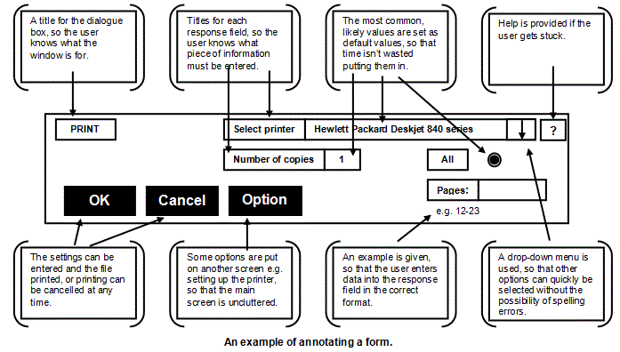

<div id="jsn-maincontent" class="span9 order1 row-fluid">
  <div id="jsn-maincontent_inner">
    <div id="jsn-centercol">
      <div id="jsn-centercol_inner">
        <div id="jsn-mainbody-content" class="jsn-hasmainbody">
          <div id="jsn-mainbody-content-inner1">
            <div id="jsn-mainbody-content-inner2">
              <div id="jsn-mainbody-content-inner3">
                <div id="jsn-mainbody-content-inner4" class="row-fluid">
                  <div id="jsn-mainbody-content-inner" class="span12 order1">
                    <div id="jsn-mainbody">
                      <div id="system-message-container"></div>

                      <div
                        class="item-page"
                        itemscope
                        itemtype="https://schema.org/Article"
                      >
                        <meta itemprop="inLanguage" content="en-GB" />

                        <div itemprop="articleBody">
                          <p></p>
                          <h1
                            class="ContentHeading"
                            style="text-align: center"
                            align="center"
                          >
                            <span class="ContentHeading"
                              >Designing and documenting forms, I/O screens and
                              reports
                            </span>
                          </h1>
                          <p class="NormalContent">
                            <strong>Designing the software interface</strong
                            ><br />
                            There are many common elements to the design of good
                            interfaces, whether they are for data input forms,
                            navigation interfaces, an interface for an
                            application, web sites and web forms or dialogue
                            boxes or indeed data capture forms and reports. In
                            this section, we will document the features of these
                            items with a view to designing our own.
                          </p>

                          <p class="NormalContent">
                            <strong
                              ><span class="NormalContentHeading"
                                >Data capture forms</span
                              ></strong
                            ><br />
                            A data capture form is a paper-based form used to
                            capture information. It is then given to a data
                            input operator to type in, using a data input form
                            on the computer. For example, if a new pupil joined
                            the school, their parents may be given a data
                            capture form, requesting details such as their
                            child's full name, address, emergency contact
                            details and so on. Once completed, they return the
                            form to the school. The school secretary or someone
                            else in the Admin Department would then transfer the
                            details from the paper form to the school's computer
                            system. Don't confuse the data capture form with the
                            data input form! The former is paper-based. The
                            latter is on the computer. It makes sense to design
                            the data capture form so that it mirrors the data
                            input form. That will make data entry much faster.
                          </p>
                          <p class="NormalContent">
                            <strong
                              ><span class="NormalContentHeading"
                                >Data input forms</span
                              ></strong
                            ><br />
                            Good input form design is important for a number of
                            reasons.
                          </p>
                          <ul>
                            <li style="list-style-type: none">
                              <ul style="list-style-type: disc">
                                <li class="NormalContent">
                                  Users need to be able to navigate quickly and
                                  easily around different screens.
                                </li>
                                <li class="NormalContent">
                                  Users need to be able to get help when they
                                  get stuck.
                                </li>
                                <li class="NormalContent">
                                  Users need to be able to enter data quickly
                                  and correctly.
                                </li>
                                <li class="NormalContent">
                                  Users need to be able to change their minds
                                  and cancel what they are doing.<strong
                                    ><span style="text-decoration: underline"
                                      >&nbsp;</span
                                    ></strong
                                  >
                                </li>
                              </ul>
                            </li>
                          </ul>
                          <p class="NormalContent">
                            
                          </p>
                          <p class="NormalContent">
                            <span style="line-height: 1.5"
                              >Data input forms can have many features on them,
                              to aid entering data into computer systems.
                              Possible features on any user interface might
                              include:</span
                            >
                          </p>
                          <ul>
                            <li style="list-style-type: none">
                              <ul style="list-style-type: disc">
                                <li class="NormalContent">
                                  A button to cancel the whole form.
                                </li>
                                <li class="NormalContent">
                                  A button to enter the data and continue.
                                </li>
                                <li class="NormalContent">
                                  A button to get further help.
                                </li>
                                <li class="NormalContent">
                                  A button to go to further options. Only the
                                  common options are shown. The rest are put on
                                  their own screen and linked from the main
                                  screen.
                                </li>
                                <li class="NormalContent">
                                  A title for the form.
                                </li>
                                <li class="NormalContent">
                                  Titles for each piece of information that has
                                  to be entered.
                                </li>
                                <li class="NormalContent">
                                  An indication to the user about what fields
                                  must be filled in and which ones are optional.
                                  This can be done by putting an asterisk next
                                  to compulsory fields, with a note near the
                                  fields saying that they are compulsory.
                                </li>
                                <li class="NormalContent">
                                  User instructions for the form.
                                </li>
                                <li class="NormalContent">
                                  User instructions for certain pieces of data.
                                  E.g. Under an input requiring a date of birth,
                                  you might see DD/MM/YYYY showing you the form
                                  that the date must be entered in.
                                </li>
                                <li class="NormalContent">
                                  User examples, E.g. instead of showing you the
                                  form of the data, you might be shown an
                                  example 21/08/1986.
                                </li>
                                <li class="NormalContent">
                                  A box next to the name of the data to be
                                  entered, so that the user knows where to type.
                                  For example, a box next to 'Name'.
                                </li>
                                <li class="NormalContent">
                                  A scroll box can be used to display a block of
                                  writing. This is a box on the screen with a
                                  scroll bar. For example, if you were ordering
                                  something online, there might be a scroll box
                                  on the screen showing you the terms and
                                  conditions. This ensures that much of the
                                  screen is not taken up with huge amounts of
                                  text.
                                </li>
                                <li class="NormalContent">
                                  Tick boxes. For example, a tick box next to
                                  "Tick if you need a VAT receipt".
                                </li>
                                <li class="NormalContent">
                                  Radio buttons. These allow a user to see all
                                  the options available and to select one or
                                  more of them. Seeing all the options at once
                                  takes space on the screen so they are only
                                  suitable when there are a limited number of
                                  options.
                                </li>
                                <li class="NormalContent">
                                  Combo boxes (drop down lists). These are
                                  suitable when there are a large number of
                                  options to choose from but you don't want them
                                  all on the screen at once because they would
                                  take up a lot of space. Tick boxes, radio
                                  buttons and combo boxes are faster ways of
                                  entering data than e.g. keyboards. They also
                                  remove the possibility of incorrect data
                                  entry, for example, through spelling mistakes
                                  or entering an option that isn't allowed. They
                                  are a method of data validation. (Validation
                                  is making sure you get sensible data into a
                                  computer as opposed to verification, which is
                                  checking that the sensible data you have
                                  entered is actually the data you want, perhaps
                                  by double-checking it).
                                </li>
                                <li class="NormalContent">
                                  Wherever possible, validation rules are used
                                  on data entry fields. These might include the
                                  use of data entry masks and range checks, for
                                  example.
                                </li>
                                <li class="NormalContent">
                                  Data entry fields are logically grouped
                                  together. All the name and address fields are
                                  together, while the options in the 'Select
                                  your Interests' are grouped together, for
                                  example. Logical groupings are often
                                  reinforced by drawing boxes around groups or
                                  by selection of colours and shading to 'raise'
                                  or 'sink' an area from the rest of the form
                                </li>
                                <li class="NormalContent">
                                  The use of pictures to reinforce a selection.
                                  For example, you could have used radio buttons
                                  to allow a user to select how to be contacted.
                                  If they select 'By telephone', a little icon
                                  of a telephone appears on the screen.
                                </li>
                                <li class="NormalContent">
                                  Clear, readable fonts.
                                </li>
                                <li class="NormalContent">
                                  Good selection of colour. Colours need to be
                                  selected so they work together and they're
                                  easy on the eyes. Some combinations work well
                                  together. Some don't. You can find lots of
                                  information about this very subject on the
                                  Internet. Discuss what keywords you could try
                                  and then do a search. The usual rule of thumb
                                  is that no more than three colours should be
                                  used or else you're in danger of the form
                                  looking a mess!
                                </li>
                                <li class="NormalContent">
                                  Colour can be used to draw a user to a
                                  particular area of the screen. For example,
                                  you could put an 'Are you sure you want to
                                  proceed?' message in red.
                                </li>
                                <li class="NormalContent">
                                  Tab order. You can't show this on a screen
                                  design but the order that you jump from one
                                  field to the next can be set up by the
                                  designer. This allows the designer to set an
                                  efficient and logical path for the user
                                  through the form.
                                </li>
                              </ul>
                            </li>
                          </ul>
                          <p class="NormalContent">
                            <strong>Dialogue boxes</strong><br />
                            A special type of input form is a dialogue box. This
                            is any window that appears because you have to make
                            selections from choices. An application or utility
                            wants to know how to proceed with an action and
                            needs you to give it some details. It pops up a
                            dialogue box for you to fill in. These are usually
                            designed to be very quick and easy to fill in. For
                            example, you might want to print out some work. You
                            go FILE then PRINT and a dialogue box appears. It
                            might look something like this:
                          </p>
                          <p class="NormalContent" align="center">
                            <br />&nbsp;
                          </p>
                          <div>
                            <p class="QuestionStyle">
                              <strong style="line-height: 1.5"
                                >Justifying a design<br /></strong
                              ><span style="line-height: 1.5"
                                >Whenever you are asked to design a form, you
                                need to be able to justify why you have designed
                                every part of it in the way you have. One method
                                of doing this on paper and in an exam and for
                                your coursework is to sketch out the design and
                                then annotate it. You should circle features on
                                the form, draw a line to the side of the form
                                where there is some space to write and then say
                                why you have done what you did! One key phrase
                                to use in your annotated comments is 'so that'.
                                Here’s an example.</span
                              >
                            </p>
                          </div>
                          <p class="NormalContent" align="center">
                            <br />&nbsp;
                          </p>
                          <div class="QuestionStyle">
                            <strong style="line-height: 1.5"
                              ><span class="NormalContentHeading"
                                >Reports and other output screens<br /></span></strong
                            ><span class="NormalContent"
                              >Reports show data and other information, often as
                              a result of a search. All reports should
                              have</span
                            >
                          </div>
                          <p>
                            <span class="NormalContent">
                              &nbsp;&nbsp;&nbsp;&nbsp;&nbsp;-&nbsp; a title,
                              because a user may have many reports<br />
                              &nbsp;&nbsp;&nbsp;&nbsp;&nbsp;-&nbsp; a date,
                              because the same report may be printed off at
                              different times and the user needs to be able to
                              identify the latest one.<br />
                              <br />
                              In addition, reports should have headings for
                              data, so the user knows what the data is they are
                              looking at. Headings should be seperated by lines
                              and spaces, to ensure easy reading. Columns of
                              data shouldn't be too close to each other, or the
                              data will be confusing.</span
                            >
                          </p>
                          <p class="QuestionStyle"></p>
                        </div>
                      </div>
                    </div>
                  </div>
                </div>
              </div>
            </div>
          </div>
        </div>
      </div>
    </div>
  </div>
</div>
